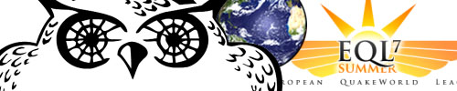

A fresh summerbreeze

While one season is coming to it’s end we have a new competition starting already with EQL7 kicking off any day now!
Despite the regular whine from clans that claim to be misplaced NQR11 turned out to be a great success. First congratulations go to the Viper Squad who were favorites from day one and lived up to that role without any trouble. After some controversy early in the season the Russian team 3B managed to take home the Silver cup having a strong team with the, mainly from dueling, reasonably well known guys XN, Bulat and Delitel with Bublik as fourth. They earned themselves a place in division one for EQL7 this summer and I’m looking forward to see if they can cause any upsets.
Suddendeath sure was one of the clans that caused some upsets last season. While Dakoth and Bps left the team they took in the two brothers Overdose and Votary, building up some nice chemistry after practice. Later on Phrenic returned to his old team too and they managed to reach the semifinals where they played some very close games against the Finnish team KOFF, which might’ve had a different outcome if Phren wasn’t moving about that time, still a very good performance by Suddendeath there!
A completely new top team was formed by some players we’ve seen for a long time in this scene. By now I’m sure everybody knows Star Alliance who have Reppie, Bps, Lakso, Goblin and Mawe in their lineup with LocKtar stepping in to play a dm2 once in a while. They had a minor upset in the quarterfinals beating the inactive Fragomatics but then ran into the too hot Viper Squad in the semis, still taking home third place in the competition by beating Suddendeath in the losers final which, finally, was played once again. For now their lineup remains as Firing Squad still hasn’t decided to come back in action even though Spoink has returned to the playing field as he joined Dies Ater, maybe we’ll see the old clan back after summer.
Newcomer to division one this season is Sega gubbar, they already did a great job in Silver last season with MM and Mooseman but now they have The Interceptor and XantoM from Fragomatic and B1aze from No Pasaran! (they are in division two this season), Sega should be a good force in division one after a bit of a practice together. A late sign up was Clan MalFunction, it’s always good to see them entering. Let’s hope they can get some practice for a change, even though they don’t like to prac! If they can get some games with Fix, Fifi and Mem they might show us some of the cMF skills we used to see. Though it seems as if The Viper Squad isn’t reachable by anyone at the moment, partially caused by the inactivity of the other teams.
The Russians I named earlier, 3B, played in the Quake Nations Cup as Russia B where they played some nice games, only to be kicked out by Sweden A in the losers bracket semifinals 2-1, winning a very close e1m2. Looking at their performance at that level makes me even more curious to see what they can pull off in division one. When checking the division one teams it will probably only become relatively high ping games against Slackers and Dies Ater as all the other teams are Swedish or Finnish (hard one for Reppie in SA though).
Going back to the nations cup. Doing a quick review of the group games the thing that strikes me first is that Denmark isn’t a shade of what they used to be. Back in the days of QWWC Denmark was a recognizable force with players like ParadokS, CrazyMac, Jerry and Forsberg. Of them only ParadokS still plays and he’s busy playing poker, even though in the past week he picked up some QW activity, Denmark only played one game in QNC and that was without him. The same counts for Poland, who made the winners bracket finals in both QWWC editions, they have lost some of their old glory. A notable thing is of course that nations could field more teams. Most striking example being Sweden with three teams in the competition, Oblivion played as Sweden B but I rather had seen Griffin, Mrlame, Dakoth and Ok98 there who wanted to sign up too. Other than that teams seemed to be afraid of Finland and there didn’t seem to be any big upsets.
Since all teams went to the playoffs the groups were mainly to decide in what bracket the teams would end up. The first round showed us five walkovers, just leaving three games of which only United Kingdom versus Russia B was interesting, UK having players like Marvel, Gibbs and good old Serox. After Russia B won dm3 with about 30 frags dm2 came up which went into overtime when UK managed to take home the win. The deciding e1m2 went to Russia B again and thus earned themselves a spot in the next round where they faced their counties A team. Russia A has members from No Pasaran!, aided by Gor who plays in Malice. They managed to get a 2-0 win in another close game where Xpr lead the way for Russia A on dm3. In the meanwhile Finland collected their fourth walkover after which they were a class apart against Russia A in the winners bracket semifinal, playing only their second game in the competition.
The second half of the winners bracket had some nice games like in the quarter final Sweden C, who have Mille, Ake Vader, Krab, TheEvilDog and mm plus the before this game added LocKtar, against the Netherlands whose main players are Reppie, Murdoc, Dragon and Purity. After a quite safe 50 frag win by the Netherlands on dm3 it was time for dm2. Sweden C quickly took control and locked down the map well. They kept control for about ten minutes and build up a solid 100 frag lead. From that point on the Netherlands started taking over and after a few minutes they locked down the map, tied them and Sweden C started some insane flooding but because the Netherlands managed to hold their ground it resulted in a 100 frag win for them.
As expected Sweden A, with players like XantoM, phren, bps, goblin, mawe and lakso, cruised through the group games and the first rounds of the playoffs, kicking down Germany to the losers brackets before they ran into the Netherlands in the winners bracket semifinal. As Dragon had 100% efficiency on dm3 for almost 19 minutes while Reppie ran most quads they secured the victory there quite comfortably. On dm2 it was all about Sweden, they never got into trouble there. The deciding e1m2 turned into a true thriller as it went into overtime where NL managed to get the upper hand in the last minutes.
In the losers bracket there weren’t too many games played but in the later stages we saw some nice ones. For example the dm3 between Germany and Sweden C was very exciting with just one frag dividing the two teams, Sweden C coming out on top as the winner, and the match. Then like I said earlier we saw Russia B (3B) against Sweden A in the losers bracket semifinal where Russia won the e1m2 with just a few frags difference. The other semifinal is between Russia A (no!) and Sweden C, of which the winner will play Sweden A. Both should be great games to watch, the winners bracket final between Finland and the Netherlands is scheduled on coming sunday, as in all games featuring the Viper Squad, it’s most likely going to turn out into their favour.
The last QNC matches should provide us with something nice to watch and of course EQL7, now featuring cmt3 and cmt4 for all divisions. All in all looking forward to the action coming up!
Good job and nice reading.
Plz, fix Russia A and Russia B names correctly. This text has caused a great deal of confusion.